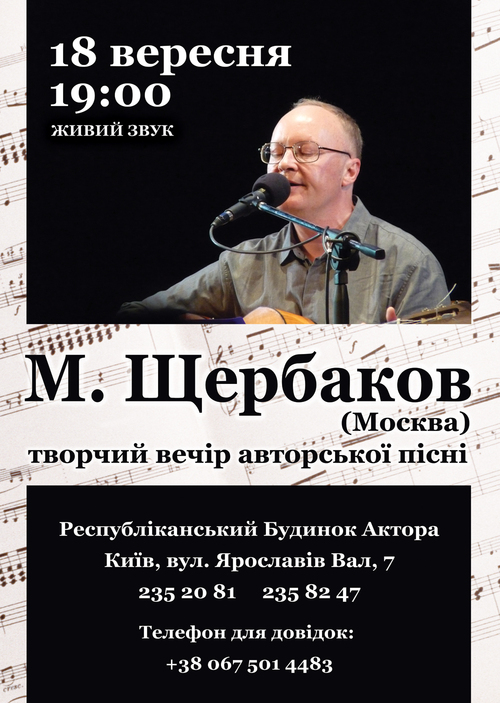

Афиши
Этот раздел изначально предназначался главным образом для организаторов концертов.
Но если вы этим и не занимаетесь, посмотреть все равно любопытно.
Афиша концерта в Петербурге, 2018 г.
Афиша концерта в Петербурге, 2016 г.
Афиша киевского концерта 2016 г.
Афиша концерта в Мельбурне, 2016 г. (КСП "Южный крест").
Афиша концерта в Оренбургском театре кукол, 2013 г.
Афиша концерта в Большом читальном зале Тургеневской библиотеки, Москва 2011 г.
Афиша концерта в Одессе, 2011 г.
Афиша киевского концерта 2011 г.
Афиша концерта в Петербурге, февраль 2011.

Афиша киевского концерта 2010 г. (отсюда).
Фотография из Иркутска, где 10.03.10 предстоит концерт в здании ТЮЗ им. А.Вампилова (на заднем плане).
Фото: Александр Сидоров, "Ъ-Власть" от 22.02.2010. См. также.

Афиша концерта в Политехническом музее, 2009. Фотография работы Дмитрия Рубинштейна (2007).
Афиша в Киеве перед концертом 6.05.04. Прислала Кари.
Макет афиши (140 Кб). Создала и прислала Кари.
Скачивайте, дополняйте и используйте по назначению.
Если нужно, то версия этого файла в формате CorelDraw 8.0 -
здесь (245 Кб).
А здесь - еще один макет афиши (180 Кб). Автор тот же.
{kind=link}
{kind=link}
Концерт в Мюнхене, 10 июня 2000 года (94 Кб). Cделал и прислал Е.Вишневский.
Концерт в Берлине, 12 июня 2000 года (330 Кб). Прислал И.Тимаков.
А здесь - версия этой афиши в формате Word (100 Кб).
Еще два варианта афиши того же концерта:

один (120 Кб) и
другой (450 Кб).
Свой труд прислала Кари.
Концерт в Париже,
22 июня 2000 года. "Текстовая" афиша на русском и французском.
Прислал М.Габович. Здесь - версия в формате Word.
Афиша с американских гастролей 1999 года. Прислал Д.Рубинштейн.
Имеется также версия этой афиши в формате Word.
Концерт в Торонто в октябре 1999 года.
Афиша с израильских гастролей 1996 года. Прислал М.Пасуманский.
Программка к концерту 12.04.1988 года в ДК МЭИ. Сохранил В. Палт.